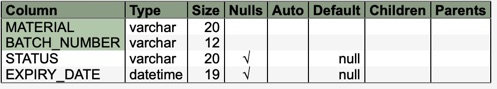

Package com.commander4j.db
Class JDBMaterialBatch
java.lang.Object
com.commander4j.db.JDBMaterialBatch
JDBMaterialBatch class is used to insert/update/delete records in the APP_MATERIAL_BATCH table. Each time a new pallet (SSCC) is created the material and batch number used in the pallet record are used to verify if the expiry date is consistent with all
other pallets which share the same Material and Batch (assuming the control record EXPIRY DATE MODE is set to "BATCH". If the control record EXPIRY DATE MODE is set to SSCC then the expiry date is stored in the SSCC record and can vary between each
pallet even if they share the same Material/Batch.

- See Also:
-
Field Summary
Fields -
Constructor Summary
ConstructorsConstructorDescriptionJDBMaterialBatch(String host, String session) JDBMaterialBatch(String material, String batch, String status, Timestamp expiry) JDBMaterialBatch(String material, String batch, Timestamp expiry, String status) -
Method Summary
Modifier and TypeMethodDescriptionautoCreateMaterialBatch(String material, String batch, String validate, Timestamp expiryDate, String status) voidclear()booleancreate()booleandelete()booleangetBatch()getDefaultBatchNumber(String batchFormat, Calendar caldate, JDBProcessOrder po) getMaterialBatchData(PreparedStatement criteria) booleanbooleangetMaterialBatchProperties(String material, String batch) voidbooleanisValid()booleanbooleanisValidMaterialBatch(String material, String batch) voidvoidsetExpiryDate(Timestamp expiryDate) voidsetMaterial(String material) voidbooleanupdate()
-
Field Details
-
field_batch_number
public static int field_batch_number -
field_batch_status
public static int field_batch_status
-
-
Constructor Details
-
JDBMaterialBatch
-
JDBMaterialBatch
-
JDBMaterialBatch
-
JDBMaterialBatch
-
-
Method Details
-
autoCreateMaterialBatch
-
clear
public void clear() -
create
public boolean create() -
delete
public boolean delete() -
delete
-
getBatch
-
getBatchFormatString
-
getBatchValidationString
-
getDefaultBatchNumber
-
getErrorMessage
-
getExpiryDate
-
getMaterial
-
getMaterialBatchData
-
getMaterialBatchDataResultSet
-
getMaterialBatchProperties
public boolean getMaterialBatchProperties() -
getMaterialBatchProperties
-
getPropertiesfromResultSet
-
getStatus
-
isValid
public boolean isValid() -
isValidMaterialBatch
public boolean isValidMaterialBatch() -
isValidMaterialBatch
-
setBatch
-
setExpiryDate
-
setMaterial
-
setStatus
-
update
public boolean update()
-